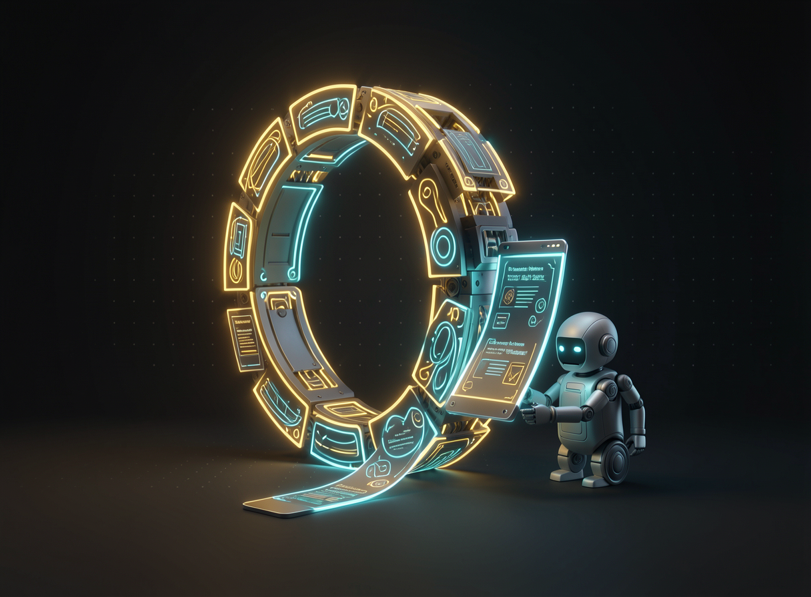

🐚 Ralph loop
El patrón más básico y más famoso de la casa: el Ralph loop (Geoffrey Huntley / HumanLayer). Es un loop de shell infinito que repite el MISMO prompt una y otra vez. Cada vuelta modifica el código, y ese código modificado se convierte en el estado inicial de la siguiente vuelta.

Qué ver: el mismo prompt entra en todas las vueltas (la flecha no cambia); lo que cambia es el código en el medio, que lleva el progreso a la siguiente iteración. Es el estado externalizado de la 4.1 llevado al extremo.
Objetivo del código de abajo
Ejecutar el mismo prompt en un loop infinito de shell, dejando que el agente avance la tarea en cada vuelta, sin que tengas que volver a escribir nada.
# O Ralph one-liner — cole no seu terminal, na raiz do projeto
# PROMPT.md contém a tarefa; troque o agente pela ferramenta que você usa.
while :; do cat PROMPT.md | npx --yes @sourcegraph/amp ; doneCómo verificar / cuándo usar: ejecútalo en un repositorio descartable (de preferencia en un worktree aislado — tema 3) con un git status abierto en otra pestaña: verás aparecer commits/cambios en cada vuelta. Úsalo para tareas grandes y repetitivas con verificación integrada; detente pronto — Huntley advierte que ejecutar demasiado produce "bizarre emergent behavior". El loop infinito es igual de poderoso y peligroso: combínalo SIEMPRE con guardrails (tema 4).
⏰ Loops programados
Owain Lewis (según se informa) describe la forma «flota»: un ciclo es un trabajo que el agente repite — se activa con una programación o un evento, lee el estado del trabajo, realiza UN job con alcance definido dentro de permisos fijos, escribe el resultado, se duerme y repite. Es lo opuesto a Ralph: disciplinado, pequeño y controlado.

Qué ver: no es un agente genio que lo hace todo: es una flota de agentes pequeños, cada uno con un job acotado y permisos fijos. La coordinación es externa (el control plane), no está en la cabeza de ningún agente.
🗂️ Manager (split)
Clasifica el backlog: separa lo que es fácil y de bajo riesgo de lo que requiere intervención humana. No escribe código: solo deriva el trabajo.
🔧 Worker
Implementa los tickets de bajo riesgo y abre PRs. Nunca hace merge. El humano aprueba al final: la puerta final queda en nuestras manos.
Lee el flujo: Las Issues de GitHub son el plano de control: la cola de trabajo compartida. El manager clasifica, el worker implementa y abre un PR, y la última puerta (el merge) siempre está en manos humanas. Ningún agente cierra el ciclo por sí solo.
🌲 Worktrees, sandboxes y permisos fijos
Para ejecutar varios agentes en paralelo sin que interfieran entre sí —y sin que alguno haga algo irreversible— necesitas aislamiento. Tres piezas: worktrees, sandboxes y permisos fijos.
🌲 Worktree
Aísla el trabajo en paralelo: cada agente en su propio árbol/branch, sin conflictos entre archivos.
📦 Sandbox
Aísla el entorno: el agente se ejecuta en un lugar donde causar daños no tiene ningún costo externo.
🔒 Permisos fijos
Definen lo que PUEDE hacer: así dejas que un loop se ejecute sin hacer algo irreversible.
💡 La idea central de los permisos fijos
Los permisos fijos son el cinturón de seguridad del loop autónomo. Decides ANTES qué puede tocar el agente (esos archivos, esos comandos) y qué está prohibido (prod, secretos, git push --force). Como nadie está mirando en cada vuelta, el límite tiene que estar en el entorno, no depender de tu atención.
🛡️ Guardrails = el trabajo de verdad
El consenso grassroots de la comunidad es directo: "los guardrails son el trabajo de verdad, no los agentes." El agente es la parte fácil. Lo difícil — y lo que separa un sistema seguro de un desastre — es diseñar los límites. El worker abre un PR, pero nunca hace merge; un humano lo aprueba.
Objetivo del prompt de abajo
Darle al agente de la flota un contrato de permisos explícito: qué puede hacer, qué está prohibido y cuándo debe detenerse y pedir aprobación humana.
# Cole no topo do PROMPT.md do seu worker (ajuste os nomes ao seu repo)
REGRAS (nêo negociáveis):
- Trabalhe APENAS nos arquivos sob ,
ou .
- Se a verificaçêo falhar 3 vezes, pare e escreva o que travou em BLOCKED.md. Cómo verificar: ejecuta el worker en un worktree de prueba y comprueba el resultado línea por línea — ¿abrió un PR sin hacer merge? ¿no tocó .env? ¿Se detuvo al llegar a una migración? Si se violó alguna regla, la barrera de seguridad es demasiado débil y el prompt debe ser más específico. La barrera solo es real cuando la pones a prueba con un agente que intenta eludirla.
🥊 Maker/checker adversarial y especialista en verificación
Ya viste Maker→Checker en la Ruta 2. Aquí sube de nivel: el checker queda adversarial. En vez de solo revisar, un segundo agente (o panel) intenta ROMPER el trabajo: recibe instrucciones para refutar, encontrar el fallo y demostrar que está equivocado.
🚨 Cuidado con la fuente: especulación, no hecho
Hesamation leyó el system prompt de Claude Code e interpretó que introduciría un subagente «verification specialist», pero ÉL MISMO lo calificó como inferencia especulativa, posiblemente inactiva.
Trata al "verification specialist" como una idea de diseño útil, no como una función confirmada de ninguna herramienta. El patrón (separar a quien hace de quien refuta) es sólido; la afirmación específica sobre el system prompt es especulación.
La diferencia desde el punto de vista adversarial: el checker no pregunta «¿está bien?», pregunta «¿cómo pruebo que está mal?». Solo aprueba cuando NO logra romperlo. Quien lo hace nunca se pone su propia nota: es la regla de oro de la verificación llevada al ataque.
🕸️ Multiagente / fan-out / orquestación
La flota crece: un manager que da prompts a agentes que dan prompts a otros agentes —«Russian nesting dolls» (muñecas rusas), anidamiento dentro de anidamiento. El patrón que organiza todo es una secuencia: orquestar → delegar (fan-out) → verificar.
Lee el fan-out: A (un orquestador) → N (varios agentes en paralelo) → 1 (un verificador que lo integra todo). El paralelismo aporta velocidad; la verificación final impide que N errores independientes se conviertan en un producto atractivo pero defectuoso.
🧠 Memoria entre intentos (Reflexion)
El último patrón cambia la unidad del loop: en vez de una vuelta, un episodio entero. La memoria entre pruebas (memoria entre intentos, del paper Reflexion) permite que el loop pase por varios intentos: actuar → recibir feedback → reflexionar en texto → guardar en la memoria episódica → hacerlo mejor la próxima vez.
| Paso | Qué sucede |
|---|---|
| 1. Actuar | el agente intenta resolver la tarea (la «trial») |
| 2. Feedback | recibe una señal de éxito o fracaso (pruebas, evaluador, entorno) |
| 3. Reflexionar | escribe en texto por qué falló y qué haría diferente |
| 4. Guardar | guarda esa reflexión en la memoria episódica |
| 5. Intentarlo de nuevo | lee la memoria y hace un intento mejor, sin volver a entrenar nada |
🔗 Adónde te lleva esto
Reflexion es la versión «aprende del error» del loop. Combínala con los otros patrones: un worker de una flota que GUARDA lo que aprendió mejora con cada ticket, sin que tengas que ajustar nada. También es la raíz de la idea de «comprehension debt» de la 4.3: cuanto más aprende el sistema por sí solo, menos entiendes por qué hace lo que hace.
En el patrón de flota programada, ¿quién hace el merge del PR?
🧾 Resumen del módulo
Siguiente:
4.3 — Riesgos, costo y caso de estudio (el cierre del curso)